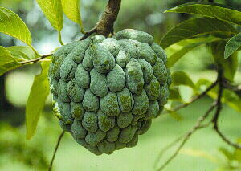
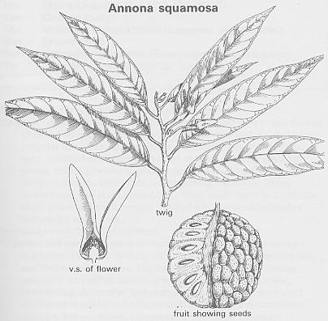
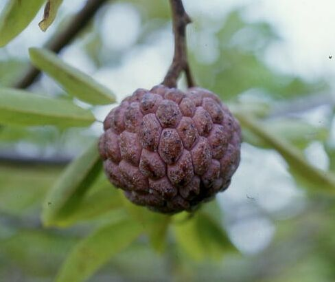

|
ECONOMICALLY
IMPORTANT PLANTS OF INDIA |
| Under-utilized Food and Fodder species and their wild relatives | Contributed by Ms.M.L Annapurna And Dr. Dhanapal, UAS, Bangalore |
Annona squamosa
Taxonomic Details

----- Correct Name
----- Classification
----- Synonyms
----- Common Names
Other Biological Details
----- Habit and Habitat
----- Diagnostic Features
----- Reproductive Biology
---------- Breeding System
---------- Phenology
---------- Pollinators
---------- Seed Biology
----------Seed Germination
------ Cultivation
----- Major Pests and Diseases
Economic Potential and Uses
----- Parts Used
----- Uses
----- Harvesting Practices
----- Produce and Products
----- Chemistry
----- Processing Techniques
----- Other uses
----- Economic Potential to the
Country
----- Export Potential
Miscellaneous Information
Literature

HABIT & HABITAT:

A deciduous low tree or shrub, 2-7 m tall, can be found
in the cultivated fields and Plains, Dry Hill slopes, Forests, Gardens, Hill
slopes, Hilly tracts, House gardens, Open areas, Temple gardens, Throughout
tropics, tropical dense forests and waste land.
BioticZone: Deccan Plateau, Konkan plain, Tropics, West Coast and Western peninsular
India,
ECOLOGY: Ranging from Warm Temperate Dry through Tropical Very Dry to Wet Forest
Life Zones, sweetsop is reported to tolerate annual precipitation of 6 to 42 dm
(mean of 26 cases == 15.3), annual temperature of 16 to 27°C (mean of 25 cases
= 24.5-C), and pH of 4.3 to 8.0 (mean of 17 cases = 6.6. A pH of 7.0-8.0 is recommended.
Quite sensitive to frot, young trees may be killed at -1°C. Mature trees are
not seriously injured by -2°C. Temperature above 40-41-C can cause a serious
flower drop. Grows best in full sun or partial shade. Sweetsop thrives in warm
dry areas of the tropics, but will grow moderately in southern Florida. It tolerates
hot eather and produces fruit even in the Nile and Jordan Valleys. In West Indies,
it grows best ear the ocean; in East Indies, it thrives only on the plains, while
in India and Sri Lanka, it rows up to 1,200 m. Minimum temperature in summer should
be 27°C and in winter 18°C. If rown in greenhouse, it requires shade from
direct sun in summer. It grows well on dry, stony oils, but prefers a sandy to
medium loam, as long as soil is well-drained. Shallow rooted, it does ot require
deep soils. Thrives on well-drained loams, sands, and oolitic limestone. It cannot
tolerate too high a water table.7-2-47'87'313
Availability :
Misc: Ainode, Ajanta Caves, Baghnadi, Balod, bhedhshi, Borai, Budbhum, Dhamtari,
Haldi ghati, Jampor beach, Kallur, Karanji village, Mahur, Mahaballeshwar,
Mahad,
Mahan, Mapuca, Marwahi, Narasimhadevarabetta, Neral, Patur, Ramayampet,
Shahabad, Shergarh, Shergarh forest, srisailam, Tatalgera, Village of Katraj ghats, Walayar
forest,
Country: America, India, Tropical America and West Indies.
Zone: Central, East, North,North East,South,West,
State: Andhra Pradesh,Arunachal Pradesh,Bihar,Goa Daman Diu,Himachal Pradesh,Karnataka,Kerala,Madhya
Pradesh,Maharashtra, Rajasthan, Tamil Nadu, Uttar Pradesh and West Bengal.
District: Akola, Allahabad, Balaghat, Bangalore, Banswara, Bidar, Bilaspur,
Bombay, Champaran, Chandrapur, Daman, Damoh, Dhar, Dharmapuri, Durg, Gulbarga,
Hoshangabad, Indore, Jaipur, Kameng, Kodagu, Kolar, Kota, Mandla, Medak,
Mehbubnagar,
Mysore, Palaghat, Pune, Raigad, Raigarh, Raipur, Rajnandgaon, Rewa, Salem,
Satara, Seoni, Shimla, Simla, Sindhudurg, Tikamgarh, Tiruchi, Tumkur, Udaipur and
Yawatmal.
Taluk: Amer, Kunigal and Sawantwadi.
Presumed native to the West Indies, and introduced
and cultivated in Virgin Islands, Australia (Queensland), Malay Peninsula, tropical
America, and is both naturalized and cultivated in India. One of the most important
fruits in the interior of Brazil. Cultivated throughout the tropics for its
fruit.2 Naturalized, e.g., in Barbados, India, Jamaica, Puerto Rico, and
Queensland.
Status :
DIAGNOSTIC FEATURES
The tree bark is brown, smooth to slightly fissured into plates,
the inner bark light yellow and bitter; twigs slightly zigzag; leaves nearly
all deciduous at once before new shoots emerge after 2 months dormancy; leaves
alternate, deciduous, distichous, petioled, petioles 1.3-2 cm long, blades ovate-oblong
to elliptic-oblong, base obtuse or rounded, apex obtuse or acuminate, entire,
dark green above, glabrous or finely pubescent, glaucous beneath, thinly pubescent,
5-17 cm long, 2-7 cm wide.
The flowers nearly all borne on leafy shoots rather than on old wood, solitary or several together, arising opposite the leaves, pendulous, 2-4 cm long, pedicel 1.5-2.5 cm long, densely pubescent or subglabrous, below the middle with a small triangular, pubescent bract; sepals 3, acute, densely or thinly pubescent, 0.2-0.3 cm long, slightly fused at base; petals 6, biseriate, sessile the 3 outer ones lanceolate, fleshy, inner-side blood-red, keeled, apex obtuse or rounded, pubescent on both surfaces, outside yellowish green, within yellowish white, 2-2.5 cm long, 0.5-1 cm wide; 3 inner petals minute, sometimes absent, ovate, at best 0.1 cm long; stamens numerous, yellowish white; collective fruit ovoid-globose with flattish base and rounded apex, glabrous, 5-10 cm in diameter, exterior glaucous or yellowish green, very bumpy, rind deeply furrowed and wrinkled, pulp yellowish white, juicy, sweetish; seeds 15-40, obovoid to elliptical, dark brown or black, shining, 1-1.5 cm long, 0.5-0.8 cm wide, about 30 per fruit, slightly compressed
Phenology :
The flowering occurs during May-Dec and
also occurs during April-November. Flowering occurs during June-July and
fruiting occurs during August-September in East Indies; July-Sept, in India;
Ripens in spring in some areas; In Sri Lanka, ripens in April and October. The
flowering and fruiting occurs nearly throughout the year in some areas.
Seed Biology:
Seed Germination:
Sweetsop may be propagated by seeds, which maintain viability for at least 3-4
years. Seeds germinate readily when soaked in water for 3 days, but germination
may take30 days. Unsoaked seeds also germinate. But usually trees are propagated
by budding after the modified Forkert method on seedling stock of the same species
of Bullock's Heart (A. reticulata) or of cherimoya (A. cherimoya).
Graftings on A. reticulata bear much earlier than seedlings of A.
squamosa, and those on A. cherimola will bloom in one year. Budding
on soursop (-4. muricatd) has not given satisfactory results. Buds are best
taken from ripened one-year non-petioled wood. Side-grafting is successful less
than 60% of the time, shield-budding ca 75%, inarching 100%. Trees do poorly
when transplanted, so extra care must be taken not to disturb the roots.
Propogation: Seed is the usual means of propagation. Nevertheless, the tree
can be multiplied by inarching, or by budding or grafting onto its own seedlings
or onto soursop, sugar apple or pond apple rootstocks.
Cultivation:
Sweetsop may be propagated by seeds, which maintain viability for at least
3-4 years. Seeds germinate readily when soaked in water for 3 days, but germination
may take30 days. Unsoaked seeds also germinate. But usually budding propagates
trees after the modified Forkert method on seedling stock of the same species
of Bullock's Heart (A. reticulata)or of cherimoya (A. cherimoya).
Graftings on A. reticulata bear much earlier than seedlings of A. squamosa,
and those on A. cherimola will bloom in one year. Budding on soursop (-4. muricatd)
has not given satisfactory results. Buds are best taken from ripened one-year
non-petioled wood. Side-grafting is successful less than 60% of the time, shield-budding
ca 75%, inarching 100%.3'3 Trees do poorly when transplanted, so extra care
must be taken not to disturb the roots. Trees are spaced 3-6 m each way when
planted in orchards, and may be intercropped with mango, sapodilla, and similar
crops for the first few years. Normal life-span is 15-20 years. Pruning should
be light, as needed, to maintain a well-shaped tree. Fruit is borne on both
old and new wood. Some fertilizer may be necessary depending on the soil.2 Phillips
and Campbell87 suggest 6-6-6 with 3% Mg 0, ca 0.1 kg per tree at monthly intervals.
Morton313 suggests 3-10-10 to increase flowering, fruit set, and yield.
MAJOR PESTS & DISEASES
Pests:
Diseases: The important diseases are
Leaf spot caused by Cercospora anonae, Pleosphaeropsis anonae;
Root rot caused by Diplodia natalensis; Fruit rot caused by Glomerella
cingulata; Pink disease caused by Pellicularia salmonicolor.
Parts used;
Fruits,
Seeds and Leaves.
Uses:
Harvesting
Practices
Under ideal conditions, seedlings bear fruits in 3-4 years; budded trees
may begin bearing in 1-year. Flowering to harvest in about 4 months. Fruit should
be picked a short time before they are fully mature or tree-ripe; otherwise
they burst on the tree. As fruits cannot be transported over long distances,
they are used locally. Fruits that have been picked almost ripe from the tree
are sometimes painted with lime near the stalk; this treatment quickens the
ripening process and influences the taste. Fruits will not ripen to good flavor
after picking at temperatures less than 15-18°C. Ripe fruit should be stored
at temperature of 4-7-C.2 Trees are ready for replacement after 10-20 years.
YEILD: Trees can yield annually 50-100 fruits.
Produce and Products:
There are variety of pruducts like Drinks, liqueurs, sherbets, ice cream,,jellies
or jams and cider.
Flora of Raigad district,Vol 1,M.J.KOTHARI & S.MOORTHY,1993,Atree,Bangalore.
Minor Forest Products of India,Vol 1,T.Krishna Murthy,1993,L.Purushothama
.jpg){kind=link}